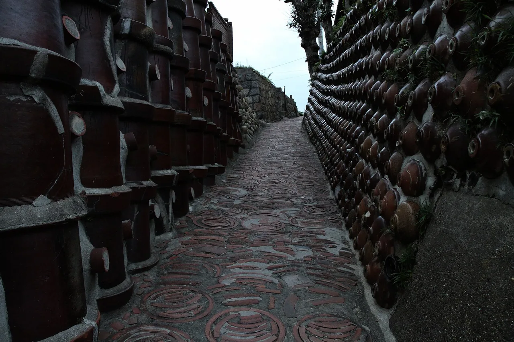
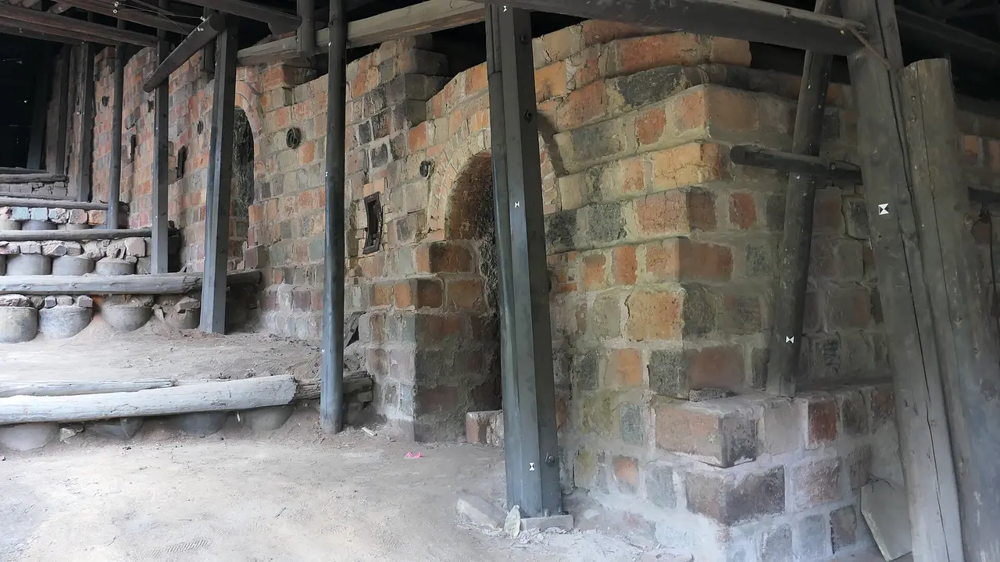
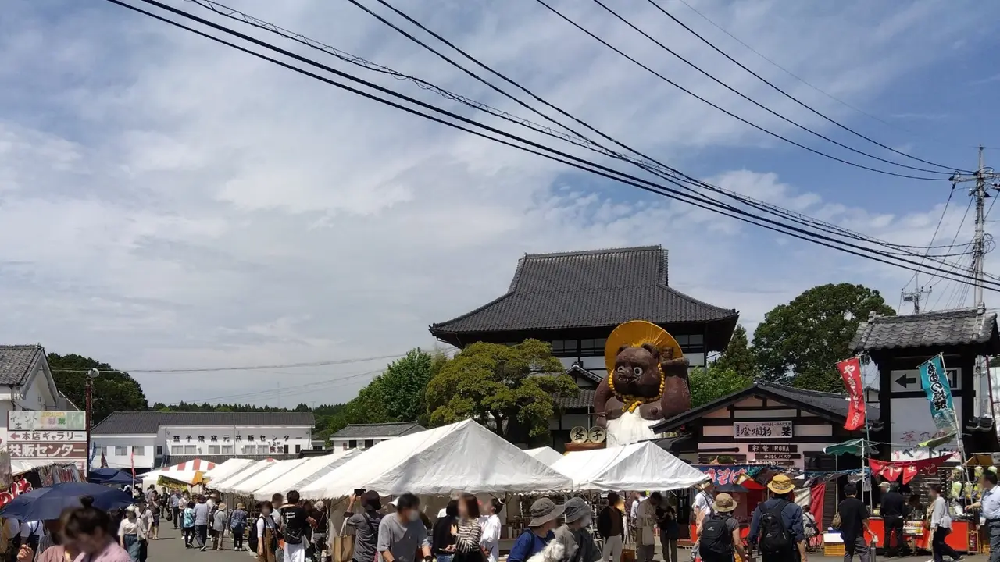
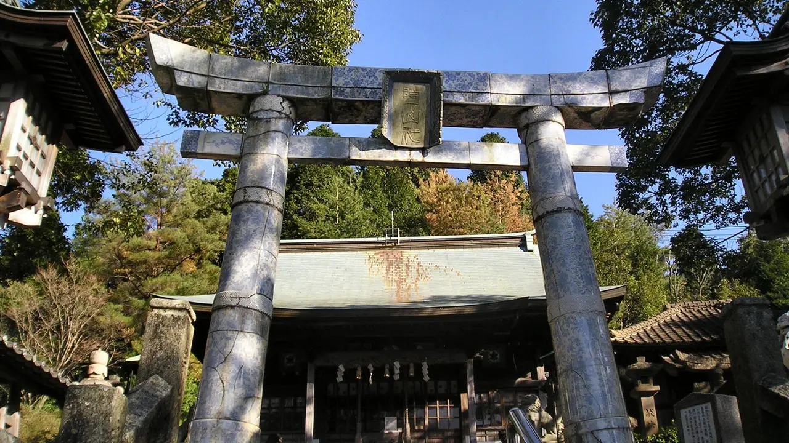
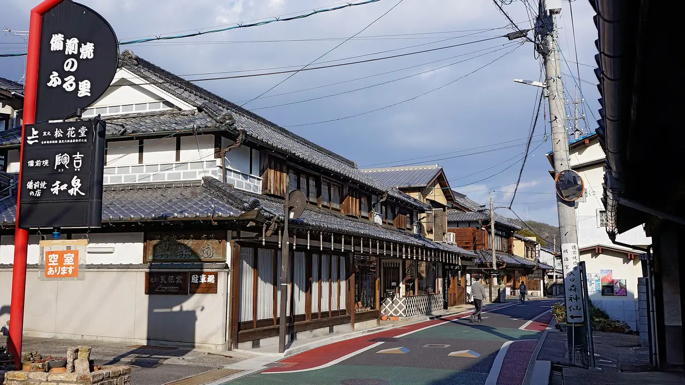
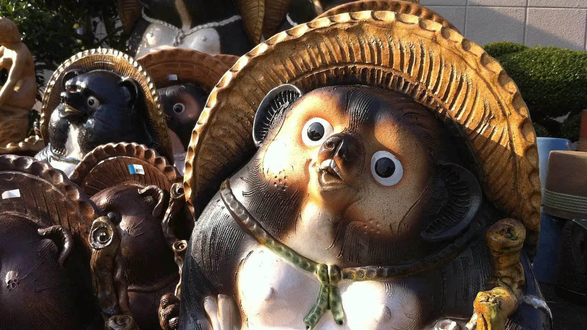

Japan's pottery towns you can explore on foot
Pottery is the one Japanese craft that shaped whole towns rather than single workshops, and it left the evidence in the streets. One town paved its lanes with the clay pipes it used to make and lined the walls with shochu bottles. One has a torii built out of porcelain. One fires without any glaze at all and has done for roughly a thousand years. That is why these five reward walking rather than shopping — the town itself is the exhibit. Two of them also hold major autumn fairs in the next few weeks. If you came from our knife towns, tea regions or whisky towns guides, this is the same idea applied to clay.

Three things that decide which town you want
1. Porcelain or stoneware? These are different materials with different towns behind them. Porcelain (磁器 jiki) is white, thin, translucent at the edges and usually painted — Arita is the porcelain town, and Japanese porcelain effectively starts there. Stoneware (陶器 tōki) is heavier, opaque and earth-coloured; Tokoname, Bizen, Shigaraki and Mashiko are all stoneware towns with very different personalities.
2. Glazed or not? Most pottery is glazed. Bizen is not, at all — its colour and markings come purely from what happens to bare clay in a wood fire over many days. If you have never held unglazed high-fired ware, that is a distinct thing worth going for.
3. Are you here for the walk or the fair? Tokoname is the best pure walk, with a marked route. Mashiko and Imbe are best during their fairs, when hundreds of stalls appear and the workshops open. Those are different trips, and the fair versions are much busier.
The Six Ancient Kilns. Tokoname, Bizen, Shigaraki, Seto, Echizen and Tamba are grouped as the Nihon Rokkoyō — the six kiln sites with continuous production since medieval times, recognised together as a Japan Heritage story. Three of the five towns here belong to that group. Mashiko and Arita do not, for opposite reasons: Arita is younger but changed everything, and Mashiko is younger still.
At a glance
| Town | Makes | The walk | Next big date | Rail from Tokyo |
|---|---|---|---|---|
| Tokoname, Aichi常滑 | Stoneware, teapots, the lucky cat | Marked Pottery Footpath, 1.6 km or 4 km | Any time | ~95 min to Nagoya, then local |
| Mashiko, Tochigi益子 | Folk-craft stoneware, everyday tableware | One long main street of shops and kilns | 31 Oct – 3 Nov 2026 | ~50 min to Utsunomiya, then local |
| Arita, Saga有田 | Porcelain — Japan's first | ~4 km between two stations, shop to shop | Autumn fair in November | ~345 min to Saga, then local |
| Imbe (Bizen), Okayama伊部 | Unglazed wood-fired stoneware | Compact — the town is around the station | 17 Oct 2026 | ~195 min to Okayama, then local |
| Shigaraki, Shiga信楽 | Stoneware, and the tanuki | Workshop-lined streets plus a 40 ha park | Any time | ~140 min to Ōtsu, then local |
The five towns, honestly
Tokoname, Aichi — the town that paved itself in its own product

Tokoname is the best walk of the five and it is not close. The Pottery Footpath (やきもの散歩道 Yakimono Sanpomichi) starts about seven minutes on foot from Tokoname Station at the city's ceramics hall and loops around a low hill through the Sakaemachi district. Course A is 1.6 km and takes about an hour; Course B runs 4 km and covers more of the industrial history.
What makes it unusual is the material. The lanes are paved with clay rings — offcuts from pipe production — and the walls are built from stacked ceramic pipes and shochu bottles set in mortar. At the industry's 1950s peak the town had more than 300 brick chimneys; around 100 survive and stand over the route.
The set piece is the Tōei climbing kiln, built in 1887 and fired until 1974, the largest surviving noborigama in Japan: eight chambers up a slope, ten chimneys of different heights, 22 m long and 9.6 m at its widest, operated collaboratively by 33 neighbouring potteries who took turns watching it, with a single firing taking around eleven days. It was designated an Important Tangible Folk Cultural Property in 1982. Records from 1912 counted about sixty climbing kilns in Tokoname; this is the only one left intact.
✔ A marked, walkable, free route through a town physically built out of its own craft — and the easiest of the five to reach from a major city.
✘ The route has hills and uneven clay paving; it is not step-free. Aichi scores 1/5 for nature in our dataset — come for the streets, not the scenery.
Best for: a half-day walk, teapots, and anyone who likes industrial heritage. Tokoname is also on the way to Chubu Centrair airport, which makes it a good last-day stop. See the Aichi guide.
Mashiko, Tochigi — the young one, and the biggest fair near Tokyo

Mashiko is the newcomer here and the closest to Tokyo. Its reputation rests on folk craft — thick, warm, usable tableware — and on the fair, which is one of the largest pottery markets in the country. Roughly 50 shops and more than 800 tents fill the town, and across the spring and autumn editions the fairs draw somewhere between 600,000 and 800,000 visitors depending on whose count you read.
The dates that matter now: the autumn fair runs 31 October to 3 November 2026. The spring edition ran 29 April to 6 May. Stalls line the main street, with a concentration near the town's giant ceramic tanuki, and kilns open their own yards.
Outside fair weeks the main street still works as a walk — shops, galleries and working kilns along one spine — but the town is quiet, which some people prefer and others find thin.
✔ The easiest major pottery fair to reach from Tokyo, with prices and variety that reward carrying a box home.
✘ During the fair the town is genuinely crowded and parking is chaos; go by train. Tochigi scores 2/5 for access in our dataset and the last leg from Utsunomiya is a local line or bus.
Best for: buying everyday tableware in quantity, and for a first pottery trip if you are based in Tokyo. See the Tochigi guide.
Arita, Saga — porcelain, and a torii made of it

Arita is where Japanese porcelain begins, with more than four centuries of production, and the town has never stopped defining itself by it. The walk is a linear one: roughly four kilometres of shops and kilns strung between JR Kami-Arita and Arita stations, which you can do in either direction and break wherever a gallery looks good.
The single most photographed thing in town is at Tōzan Shrine, where the torii, the komainu guardian dogs and the lanterns are made of Arita porcelain rather than stone — pale blue-white, glazed, and slightly startling once you register what you are looking at. It is the clearest possible statement of what this town is.
The spring Arita Ceramics Fair is one of Japan's largest, held across Golden Week — 29 April to 5 May in 2026, the 122nd edition — with more than 400 shops along that four-kilometre stretch and around 1.2 million visitors. It began in 1896 as a warehouse clearance sale alongside a ceramics exhibition. There is a smaller autumn fair in November as well.
✔ The deepest history of the five, an unusually legible walking route, and porcelain you cannot buy at this range anywhere else.
✘ Far. About 345 minutes from Tokyo to Saga before the local leg, and Saga scores 1/5 for culture in our dataset — Arita is the exception rather than the pattern.
Best for: porcelain, and for anyone already going to Kyushu. Pair it with Karatsu or Imari. See the Saga guide.
Imbe, Okayama — a thousand years without glaze

Bizen ware is made in and around the village of Imbe, which is why it is also called Imbe ware, and it is the outlier of Japanese ceramics: completely unglazed. Every colour and marking on a Bizen piece — the reddish browns, the ash deposits, the scorch lines — comes from the wood firing itself, over days, with nothing painted or dipped on. Production here runs back close to a thousand years, and Bizen is one of the Six Ancient Kilns.
For a visitor this is the most compact town on the list: the pottery quarter is essentially the streets around Imbe Station, dense with galleries and workshops, which makes it a genuine walk-off-the-train destination rather than a bus expedition.
The Bizen Pottery Festival is on 17 October 2026. Over 100,000 people come, potters open their workshops for wheel-throwing sessions, and festival prices typically run about 20% below retail.
✔ The most distinctive material of the five, and the shortest walk from station to first kiln.
✘ Unglazed ware is porous and needs a little care; it is also an acquired taste. Okayama scores 1/5 for food and 1/5 for nature in our dataset — this is a craft trip, not a scenic one.
Best for: people who want one serious piece rather than a boxful, and for anyone travelling the Sanyo line. See the Okayama guide.
Shigaraki, Shiga — the tanuki town, and a park full of clay

Shigaraki is the town behind the ceramic tanuki that stands outside restaurants across Japan, and walking in is faintly comic: rank after rank of them, straw hats and all, outside every shop. It is also a serious Six Ancient Kilns site in a cold mountain basin, where the streets are mostly workshops and sellers.
The anchor is the Shigaraki Ceramic Cultural Park (滋賀県立陶芸の森), opened in 1990 — 40 hectares with the Museum of Contemporary Ceramic Art, an industrial ceramics hall with a shop and gallery, large ceramic sculptures out on the lawns, and an artist-in-residence programme that brings potters from Japan and abroad to work on site.
✔ The most family-friendly of the five, the most contemporary art, and the easiest from Kyoto — about ten minutes to Ōtsu before the local leg.
✘ The tanuki dominate the shopping and can make the town feel like a souvenir strip. Shiga scores 2/5 for access; the Shigaraki Kōgen Railway is charming but infrequent.
Best for: a day out from Kyoto, contemporary ceramics, and anyone travelling with children. See the Shiga guide.
Getting there: rail times
Times are to each prefecture's main station. Every town needs a local leg after that — the Meitetsu line to Tokoname, the Shigaraki Kōgen Railway, a local train or bus to Mashiko.
| Town (main station) | From Tokyo | From Kyoto | From Shin-Osaka |
|---|---|---|---|
| Mashiko (Utsunomiya) | ~50 min | ~195 min | ~200 min |
| Tokoname (Nagoya) | ~95 min | ~35 min | ~50 min |
| Shigaraki (Ōtsu) | ~140 min | ~10 min | ~25 min |
| Imbe (Okayama) | ~195 min | ~65 min | ~45 min |
| Arita (Saga) | ~345 min | ~210 min | ~190 min |
From NihongoHub's rail reachability matrix (approximate, ±20%, fastest services). The nationwide JR Pass does not cover the fastest Tokaido/Sanyo trains, so add 15–25% on those segments. The pattern: from Tokyo only Mashiko is a comfortable day trip; from Kansai, Shigaraki, Tokoname and Imbe all are.
Buying pottery you have to carry
The practical problem with pottery towns is that everything you want weighs something and breaks. A few things worth knowing before you fill a bag.
| Situation | What to do |
|---|---|
| Buying at a fair | Most stalls wrap in newspaper only. Bring a padded bag; buy the fragile things last. |
| Buying several pieces | Ask about domestic shipping (発送 hassō) to your hotel — many shops do it and it is cheap. |
| Flying home | Hand luggage, not checked. Ceramics survive people far better than baggage handlers. |
| Unglazed Bizen | Porous — rinse and dry properly, and do not put it in a dishwasher. |
| Buying after you leave | Kiln-direct pieces rarely reach amazon.com; a proxy service is the route. |
Ceramics are heavy, so international shipping cost is often a large share of the total — check the quote before you commit, and consolidate orders. See how to buy from Japan with Buyee vs ZenMarket →.
The Japanese you'll meet
| Japanese | Reading | What it means |
|---|---|---|
| 焼 | -yaki | "Fired". Attaches to the place: 益子焼 Mashiko-yaki, 備前焼 Bizen-yaki. |
| 陶器 / 磁器 | tōki / jiki | Stoneware / porcelain. The first distinction on any price label. |
| 窯元 | kamamoto | A kiln — meaning the workshop and the family that runs it. |
| 登窯 | noborigama | Climbing kiln, built up a slope in linked chambers. |
| 陶器市 | tōki-ichi | Pottery market. The word in every fair name here. |
| 釉薬 | yūyaku | Glaze. 無釉 muyū means unglazed — the Bizen word. |
| 轆轤 | rokuro | Potter's wheel. 轆轤体験 is a wheel-throwing session. |
| 発送 | hassō | Shipping. The word to say when your hands are full. |
Common questions
If I pick one town, which? Tokoname for the walk, Mashiko if your dates land on the autumn fair, Arita if you specifically want porcelain.
Which is best without a car? All five work by train, but Tokoname and Imbe are the most walk-from-the-station of the group.
Are fair prices actually lower? At Bizen, festival prices typically run around 20% below retail. Elsewhere the bigger gain is choice — hundreds of makers in one street rather than a curated shelf.
Is unglazed Bizen safe for daily use? Yes, it is high-fired and used as tableware every day in Japan. It is porous, so dry it properly and skip the dishwasher.
What is the tanuki about? Shigaraki has made ceramic tanuki as good-luck figures for generations; they stand outside shops and restaurants nationwide. The town is where they come from.
Where to go, what to eat, what to bring home — one Japanese region at a time, with the practical details guides leave out. Free, no spam, unsubscribe anytime.
Sources: the Pottery Footpath's start point at Tokoname City Ceramics Hall about seven minutes from Tokoname Station, the Sakaemachi loop, Course A at 1.6 km and Course B at 4 km, the clay-ring paving and pipe-and-bottle walls, and the survival of around 100 of the 300-plus brick chimneys from the 1950s peak, from Tokoname city tourism materials and published route guides. The Tōei climbing kiln's 1887 construction, use until 1974, status as the largest surviving noborigama in Japan, eight chambers, ten chimneys, 22 m length and 9.6 m maximum width, collaborative operation by 33 neighbouring potteries, firing time of about eleven days, 1982 designation as an Important Tangible Folk Cultural Property, and the roughly sixty climbing kilns recorded in Tokoname in 1912, from Tokoname city and Aichi tourism sources; the slope is given variously as about 17 and about 20 degrees, so no single figure is quoted here. Mashiko's roughly 50 shops and 800-plus tents, the combined spring-and-autumn visitor figures (reported as about 600,000 in some sources and about 800,000 in others, which is why a range is given), the 2026 spring dates of 29 April to 6 May and autumn dates of 31 October to 3 November, from Mashiko tourism association and Tochigi tourism materials. Arita's four-century porcelain history, the roughly 4 km of shops between JR Kami-Arita and Arita stations, the 122nd Arita Ceramic Fair running 29 April to 5 May 2026 with more than 400 shops and around 1.2 million visitors, its origin in an 1896 warehouse clearance sale held alongside a ceramics exhibition, and the separate November autumn fair, from Arita and Saga tourism materials; the porcelain torii, komainu and lanterns at Tōzan Shrine from published Arita guides. Bizen ware's production in and around Imbe, its alternative name, its completely unglazed wood-fired character and history of close to a thousand years as one of the Six Ancient Kilns, and the Bizen Pottery Festival on 17 October 2026 with over 100,000 visitors, open workshops with wheel-throwing and prices typically about 20% below retail, from Okayama prefectural tourism materials. The Shigaraki Ceramic Cultural Park's 1990 opening, 40-hectare site, Museum of Contemporary Ceramic Art, industrial ceramics exhibition hall with shop and gallery, outdoor sculptures and artist-in-residence programme, from Shiga tourism materials. The Six Ancient Kilns grouping from published Japan Heritage descriptions. Prefecture profile scores from NihongoHub's 47-prefecture dataset; rail times from NihongoHub's reachability matrix (approximate, ±20%). Fair dates and opening hours change every year — confirm with the organiser before booking travel.